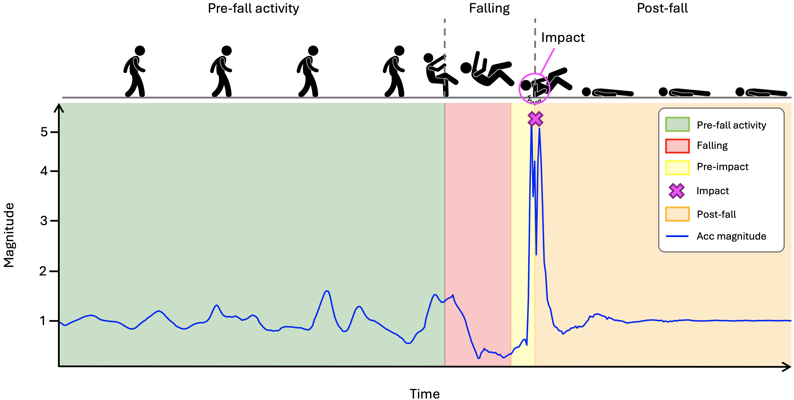

🎯 Core Thesis: Sophisticated deep learning can operate effectively on resource-constrained wearable devices when efficiency considerations guide design from initial conception.
1. Research Context & Motivation
3/30
The Fall Detection Challenge
16%
of non-fatal workplace injuries are falls (US, 2022)
865 fatalities annually
3M
emergency department visits per year (elderly)
$50 billion annual cost
1.5B
people aged 65+ by 2050 (+105%)
Rapidly aging population
❌ Post-Impact Detection (Traditional)
Reactive approach — alerts after fall occurs. System detects the ground impact event. Cannot prevent impact injuries. Response begins only after patient is already on the ground.
!
No injury prevention capability
!
Post-event emergency response only
✅ Pre-Impact Detection (This Thesis)
Proactive approach — detects fall before ground contact. Enables protective device activation during the critical falling phase, preventing or reducing injury.
✓
Wearable airbags reduce hip impact by 60–80%
✓
150–250ms safety margin for device activation
🔑 Key Insight: Wearable airbag systems can reduce hip impact forces by 60–80% when deployed during the pre-impact phase — but only if the detection system acts before ground contact.
1. Research Gaps & Motivation
4/30
📊 Dataset Limitations
✕
Limited Scenario Coverage No construction-specific elevation falls (ladders, scaffolds) in existing benchmarks
✕
Laboratory-Only Data No naturalistic operational recordings capturing real workplace movement patterns
✕
Severe Class Imbalance Falls constitute <3% of data, undermining model training reliability
⚗️ Methodological Limitations
!
Timing Constraint Violations Many approaches use 500–1000ms windows — insufficient time for device activation
!
Unrealistic Training Models trained on complete falls including impact signatures — unavailable in real deployment
No MCU Validation Most research evaluates on desktop/cloud without embedded hardware testing
?
Insufficient Efficiency Analysis Limited characterization of memory, inference time, power consumption
?
Field Validation Absence Laboratory results without real-world construction site testing
Research Motivation: This thesis addresses these critical gaps through systematic dataset development, lightweight architecture design, and real-world validation — bridging the gap between academic research and deployable embedded safety systems.
2. Research Objectives & Questions
5/30
RQ1Dataset Development for Robust Pre-Impact Detection
"How can comprehensive datasets encompassing diverse fall scenarios be developed to support robust pre-impact detection model training?"
→ Construction-specific elevation falls, naturalistic workplace recordings, benchmark integration
RQ2Embedded Deployment on Resource-Constrained Devices
"How can pre-impact fall detection be achieved on resource-constrained embedded microcontrollers suitable for wearable devices?"
RQ3Addressing Class Imbalance Through Data Augmentation
"How can severe class imbalance between fall and non-fall data be effectively addressed to improve detection reliability?"
→ Generative models (VAE, CT-GAN, hybrid) for realistic fall synthesis
RQ4Hierarchical Classification for Enhanced Reliability
"How can hierarchical classification strategies enhance fall detection performance beyond single-stage segment classification?"
→ Random Forest event-level aggregation, temporal confidence patterns
💻
Technical Goal
Design lightweight DL architectures achieving high accuracy within strict microcontroller constraints
🔬
Methodological Goal
Develop comprehensive datasets and evaluation protocols emphasizing practical reliability
🏭
Translational Goal
Establish methodologies for industry adoption and demonstrate real-world deployment readiness
3. Contribution 1 — Dataset Development
6/30
Comparison with Existing Benchmarks
Dataset
Subjects
ADLs
Falls
Work Tasks
Worksite Data
Elevation Falls
KFall [2]
32
21
15
✕
✕
✕
SisFall [3]
38
19
15
✕
✕
✕
MobiAct [4]
66
9
4
✕
✕
✕
FARSEEING [5]
15
—
Real
✕
✓
✕
🏆 UNIVRFall (Ours)
29 + 10
24
21
✓
✓*
✓ (6 types)
* Including data from 10 workers from a real construction site
🏗️ Unique Elevation Falls
6 construction-specific elevation fall types including ladder falls, scaffold falls, and backward falls from height — scenarios absent from all prior benchmarks.
🤖 AutoML Benchmark
Extreme class imbalance (2.22% falls) combined with hardware constraints makes this dataset ideal for neural architecture search and model compression research.
🔗 KFall Integration
Designed following KFall structure for direct integration, creating a combined resource of 61+ participants with standardized preprocessing. Dataset: zenodo.org/record/18346755
3. Smart Safety Jacket & Sensing System
7/30
STM32-Based Sensor Board & Safety Jacket
Figure 1: Custom STM32F722RET6-based sensor board worn at lower back (L1–L2) integrated into the smart safety jacket (Protechto s.r.l.).
💾 Microcontroller
DeviceSTM32F722RET6
CoreARM Cortex-M7
Clock216 MHz
Flash512 KB
SRAM256 KB
📡 Accelerometer
DeviceLIS3DH
Range±16g
Resolution1mg
AxesTri-axial MEMS
Rate100 Hz
🌀 Gyroscope
DeviceLSM6DS3
Range±2000 dps
Resolution0.07 dps
AxesTri-axial
Rate100 Hz
🦺 Safety Integration
PlacementL1–L2 vertebrae
Channels6-channel IMU
AirbagPre-impact deploy
PartnerProtechto s.r.l.
Sensor Placement: Positioned at lower back (vertebrae L1–L2) capturing whole-body dynamics with anatomically-aligned coordinate system for optimal fall signature capture.
3. Data Collection Protocol
8/30
🔬 1. Controlled Laboratory
👥
Participants: 29 healthy volunteers (25M / 4F), age 23.6 ± 6.2 years
⏱️
Duration: Standardized 45-minute protocol per participant
🏃
Activities: 23 ADLs + 21 fall types in randomized order
🛡️
Safety: Falls onto 15cm foam padding; 100fps video with LED sync
Construction-Specific ADLs Added:
Task 43: Climb up/down stairs | Task 44: Walk slowly & jump over obstacle
🏗️ Unique Elevation Falls (Tasks 37–42)
37–38: Backward fall (slow & quick)
39–40: Forward/Backward fall from height
41: Ladder fall (climbing up)
42: Ladder fall (climbing down)
🏗️ 2. Real Construction Site
👷
Participants: 10 workers during normal work shifts
📊
Recording: 0.8 to 11.5 hours per session (Task ID 88)
🔧
Activities: Scaffold transport, heavy lifting, material climbing, equipment operation
🔒
Privacy: Only sensor data recorded (no video/audio); identities anonymized
Figure 2: Participants during controlled data collection sessions including ADLs and fall simulations.
3. Dataset Statistics & Fall Duration Analysis
9/30
📊 Recording Time Distribution
Environment
Duration
Share
Controlled Lab (29 participants)
3.41 h
7.41%
Activities (23 tasks)
2.35 h
5.10%
Falls (21 types)
1.06 h
2.30%
Construction Site (10 workers)
42.64 h
92.59%
Total Dataset
46.05 h
100%
⚠️ Class Imbalance Challenge: Actual falling time represents only 0.16% of the whole dataset (lab + worksite), and 2.22% in controlled lab settings — reflecting real-world conditions where falls are rare events.
573
Total fall recordings
131:1
Activity:fall ratio (full dataset)
⏱️ Fall Duration Distribution (573 Falls)
Fall duration distribution chart
Figure 3: Fall duration distribution showing temporal characteristics of both elevation and ground-level falls.
📏 Duration Stats
Mean476.7 ms
Range150–1200 ms
Std Dev183.9 ms
🏗️ Elevation vs. Ground
Elevation falls700–1000 ms
Ground-level300–600 ms
Reaction timeMore margin
3. Temporal Annotation & Synchronization
10/30
Four Fall Phases
🟢
Pre-Fall Phase
Normal daily activities before fall onset (Frame < 241)
🟡
Falling Phase
Unrecoverable free-fall from onset to impact (Frame 241–313)
🔴
Impact Phase
Ground contact moment (Frame 313) — our detection must precede this
🔵
Post-Fall Phase
Recovery movements after impact (Frame > 313)

Figure 4: Illustration of the four fall phases with corresponding acceleration patterns and the pre-impact detection window targeted by this thesis.
💡 LED Synchronization Protocol
Three high-brightness LEDs execute a programmed sequence for precise temporal alignment between 100fps video and 100Hz IMU data:
🔴 RED — 500 ms
→
🟡 YELLOW — 250 ms
→
🟢 GREEN — 250 ms
Bit transitions 0→4→1 encoded in sensor data enable frame-level synchronization, ensuring precise temporal labels for each fall event down to 10ms resolution.
3. Dataset Collection — Video Demonstration
11/30
📽️ Collection Process: From Lab to Construction Site
📹 Video Content Includes
🔬
Laboratory setup, safety measures, and foam padding protocol
🏃
Participants performing ADLs and simulated fall scenarios
🏗️
Elevation-specific falls: ladder and scaffold scenarios
💡
LED synchronization system in operation
📊 Collection Summary
👥
39 subjects total in controlled environment (29 lab + 10 site workers)
⏱️
46.05 hours of sensor recordings collected
🎯
573 fall events annotated with frame-level precision
4. Contribution 2 — Lightweight CNN
12/30
Evaluation Configuration A — Controlled Environment
⚙️ Configuration A Setup
📊
61 laboratory participants: 32 from KFall + 29 from UNIVRFall (Tasks 01–44)
🪟
400ms windows with 50% overlap; final 150ms before impact excluded
🔄
5-fold subject-independent cross-validation
🎯
Purpose: Architecture validation for embedded deployment
242,738
Non-falling windows (96.4%)
9,105
Falling windows (3.6%)
Why 150ms exclusion? The final 150ms before impact contains ground-contact signatures that are not available in real deployment — excluding them ensures the model learns only pre-impact features.
⏱️ Pre-Impact Timing Budget
Pre-Fall (stable activity)
Falling Phase (~300ms)
Safety Margin
0 ms400ms detection window500–700ms impact
Fall Duration
Decision Latency
Available Safety Margin
500 ms (short fall)
400 ms
93 ms
600 ms (typical fall)
400 ms
193 ms
700 ms (elevation fall)
400 ms
293 ms
Design Constraint: Airbag inflation requires ~150ms. The system must detect and decide within 400ms to leave sufficient activation time.
Parallel sensor processing + short windows + INT8 quantization keep memory and latency within strict STM32 bounds while maintaining classification performance.
4. Contribution 2 — Results & Validation
14/30
Configuration A — 5-Fold Subject-Independent Cross-Validation
86.69%
Segment-level F1-score
89.32%
Precision
84.26%
Recall
4 ms
STM32 inference time
📊 Embedded Deployment Summary
Component
Flash
RAM
Inference
CNN (INT8)
67.03 KB
16.87 KB
4 ms
STM32 Limit
256 KB
256 KB
—
Utilization
26.2%
6.6%
✓ 4 ms
✅ Proof of Feasibility: First practical demonstration of pre-impact fall detection running entirely on an STM32 ARM Cortex-M7 microcontroller in real time.
⚠️ Event-Level False Alarm Analysis
4.17%
False Negatives (missed falls)
2.04%
False Positives (false alarms)
At 2.04% false positive rate, this projects to ~29 false alarms per 8-hour shift — unacceptable for practical construction site deployment.
Chapter 5 Objective: Reduce missed falls and false alarms without losing embedded feasibility. This motivates the advanced pipeline with generative augmentation and event-level classification.
5. Contribution 3 — Advanced Detection Pipeline
15/30
Configuration B — Realistic Deployment-Oriented Evaluation
⚙️ Configuration B Setup
👥
71 total subjects: 61 lab participants + 10 construction workers (Task 88 added)
🪟
300ms windows with 50% overlap — shorter to support two-stage event recognition
🔄
Same 5-fold subject-independent validation protocol
🎯
Deployment-oriented: Real naturalistic activity patterns included
📊 Configuration B Statistics
57.14h
Total duration (3,428.4 min)
24.52
Minutes of true falling phase
131:1
Activity-to-fall ratio
300ms
Window size
🆚 Config A vs. Config B
Aspect
Config A (Ch. 4)
Config B (Ch. 5)
Subjects
61 (lab)
71 (lab + worksite)
Window size
400 ms
300 ms
Imbalance ratio
~27:1
131:1
Purpose
Architecture validation
Deployment readiness
🔑 Key Design Decisions
⏱️
300ms windows: Two consecutive windows give 450ms decision latency, leaving 150–250ms for airbag activation
🏗️
Task 88 inclusion: Real worksite data is the major source of false alarms — must be in training
5. Chapter 5 — Methodology with Generative Augmentation
Lightweight CNN as segment-level classifier on augmented data
→
④ RF Event-Level
Random Forest aggregates confidence patterns from M=2 consecutive windows
🧠 VAE Augmentation
Variational Autoencoder learns latent space. 2× synthetic fall samples generated per fold. Quality: low FID (57.54 avg), smooth generation.
⚡ CT-GAN Augmentation
Conditional Tabular GAN with adversarial training. 2× synthetic fall samples generated per fold. Higher diversity but higher FID (350.15 avg).
🔄 Hybrid VAE+GAN
Combines both: 2× VAE + 1× GAN = 3× synthetic per fold. Balances generation quality and diversity for maximum coverage.
Key Message: Same embedded CNN backbone from Chapter 4, with stronger training data (generative augmentation) and smarter event-level decision making (Random Forest) — no increase in deployment cost.
5. Random Forest Decision Process: Live Demonstration
6. Operational Jacket Performance — False Alarms in Practical Use
21/30
Time Period
CNN Only (Ch.4)
CNN + RF (Ch.5)
Reduction
8-hour work shift
~29
~1
96.6% ↓
🟢
24 hours
~88
~3
96.6% ↓
🟢
5-day work week
~441
~13
97.1% ↓
🟢
22-day work month
~1,939
~57
97.0% ↓
🏆
💡 Monthly Effect: About 33× fewer disruptions to worker workflow (from ~1,939 to ~57)
🏭 Real-World Impact
👷
Worker acceptance: 1 false alarm per shift vs 29 — practical for daily construction use
💰
Commercial viability: Low false alarm rate is critical for market adoption
🔋
Battery life: Fewer unnecessary activations preserve airbag gas cartridge
📊 Safety Margin Preserved
⏱️ End-to-End Timing
Typical fall duration500–700 ms
Decision latency450 ms
Device activation150 ms
Available margin150–250 ms ✓
6. Embedded Deployment Validation
22/30
💾 STM32F722RET6 Resource Utilization
Component
Flash (KB)
RAM (KB)
Inference (ms)
CNN (INT8)
58.51
15.00
4.0
Random Forest
31.20
2.00
0.5
Total
89.71
17.00
4.5
STM32F722 Limit
256.00
256.00
—
Utilization (%)
35.0%
6.6%
✓
CNN Resources
Flash58.51 KB
RAM15 KB
of 256KB22.9%
RF Resources
Flash31.20 KB
RAM2 KB
of 256KB12.2%
⏱️ Timing Performance
Stage
Latency
CNN Inference
4.0 ms
Random Forest
0.5 ms
Total Inference
4.5 ms
Decision Latency
450 ms (two 300ms windows, 50% overlap)
⚡ Safety Margin Analysis
Typical fall duration:500–700 ms
Decision latency:450 ms
Device activation:150 ms
Available safety margin:150–250 ms ✓
Chapter 5 improves reliability without breaking the budget — same or better performance at only 35% Flash and 6.6% RAM utilization.
6. Smart Airbag Jacket in Action
23/30
Smart safety jacket worn by participants during elevation fall scenarios
Figure 6: Smart safety jacket (Protechto s.r.l.) in action — participant on ladder (left), scaffold scenario (center), fall simulation with airbag deployment (right).
🎬 Video Content Includes
🎯
Real-time fall detection triggering on STM32
💨
Pre-impact airbag deployment before ground contact
🛡️
Protective cushioning coverage of hip and torso
⚡ Critical Timing Requirement
The system must detect the fall and trigger airbag deployment within the pre-impact window, providing full protection before ground contact. Our 450ms decision latency + 150ms activation = 600ms total, matching the pre-impact phase of typical falls.
5. Complete Methodology Pipeline — Chapter 5
24/30
📊
IMU Data
📡 Stage 1: Raw Data
👤
📱
ACC
GYRO
Fs=100Hz
6-ch IMU
🔧 Stage 2: Signal Processing
📈
LPF 5Hz
→
⚖️
Z-Score
→
🪟
300ms
50% overlap
🧠 Stage 3: Segment-Level CNN Training
5-Fold Subject CV
Train/Val/Test splits
Data Augmentation
Time WarpSlice
Generative Sampling
VAECT-GANHybrid
Lightweight 1D-CNN
Class-weighted CE
5 best fold checkpoints feed into Stage 4.
🌳 Stage 4: Event-Level RF
CNN (×5)
F1
F2
F3
F4
F5
→
M=2
p₁p₂
→
6D Features
μ, max, π
q₀.₅, q₀.₇, c
→
RF Train
🌲🌲
5-fold OOF
⚡ Stage 5: STM32 Deployment
💾
STM32F722RET6
IMU
→
CNN
→
6D Feat
→
RF
→
Decision
⏱️ 450 ms ± 5ms
Decision Latency
7. Research Dissemination & Real-World Impact
25/30
🏅 Peer-Reviewed Publications
🏆 DATE 2025 — Best Paper Award
"A Lightweight CNN for Real-Time Pre-Impact Fall Detection"
C. Turetta, M. T. Ali, F. Demrozi, G. Pravadelli
Design, Automation & Test in Europe (DATE), 2025
📖 IEEE Access (2024)
"ICT-Based Solutions for Alzheimer's Disease Care: A Systematic Review"
M. T. Ali, C. Turetta, F. Demrozi, G. Pravadelli
IEEE Access, vol. 12, pp. 13952–13980, Jan. 2024
🔬 IEEE Sensors (Under Review)
"Exploring Generative Data Augmentation for Real-Time Pre-Impact Fall Detection"
M. T. Ali et al.
IEEE Sensors Journal, 2025
🎓 CoMoRe-AI @ IEEE PerCom 2026
"IMU-based pre-impact, impact, and post-impact fall detection dataset"
University of Verona — Parallel Computing, GPU, Heterogeneous Architectures
Prof. Stefano Tamburin
University of Verona — Movement Disorders, Clinical Neurophysiology
"Grateful for the dedicated oversight, insightful evaluations, and valuable recommendations from the committee that shaped this research journey."
8. Key Achievements & Research Outlook
27/30
✅ Key Achievements
1
Sophisticated DL on Microcontrollers
Demonstrated that deep learning operates effectively on resource-constrained devices when efficiency considerations guide design from initial conception. 89.71KB total, 4.5ms inference.
2
Safety-Critical Reliability
Achieved 99.5% event-level F1-score with <1% false negatives — meeting stringent safety-critical deployment requirements for construction environments.
3
Bridging Research & Deployment
Established methodologies for industry adoption with commercial deployment validating real-world readiness. 97% false alarm reduction enables practical worker acceptance.
🎯 Quantitative Outcomes
99.5%
Event F1-Score
99.9%
Precision
97%
False Alarm ↓
4.5ms
Inference Time
Research Philosophy
"Sophisticated machine learning operates effectively within severe wearable device constraints when efficiency considerations guide design from initial conception."
🏆 DATE 2025 Best Paper
📊 3 Publications
🏭 Commercial Deploy
📦 Public Dataset
8. Future Research Directions
28/30
👥 POPULATION
Population Diversity
Validation with elderly populations (primary at-risk group) and diverse deployment contexts — healthcare, industrial, sports. Current dataset focuses on young, healthy volunteers.
⚡ RARE EVENTS
Rare Event Categories
Address elevation falls (4–8% miss rate) through targeted data collection or few-shot learning. Ladder and scaffold falls remain challenging due to limited training examples.
🧠 ARCHITECTURES
Advanced Architectures
TCN (Temporal Convolutional Networks), attention mechanisms, and neural architecture search with hardware-aware optimization for better accuracy-efficiency trade-offs.
🔗 INTEGRATION
System Integration
Power optimization for 24-hour monitoring, user interface design for worker feedback, domain-specific protocol integration with construction site safety management systems.
📅 Immediate Plans (Next 3 months)
📝
IEEE Sensors manuscript — finalize and submit
📚
PhD thesis writing — complete dissertation by December 2025
📦
Dataset publication — full release on Zenodo with documentation
🌍 Broader Research Vision
🏗️
Expand to other high-risk industries: mining, manufacturing, logistics
🧓
Adapt for elderly care: home monitoring, assisted living facilities
🏥
Clinical validation with neurological patients (Parkinson's, MS)
References
29/30
[1]
U.S. Bureau of Labor Statistics, "Injuries, Illnesses, and Fatalities (IIF)," 2022. Available: https://www.bls.gov/iif/
[2]
X. Yu, J. Jang et al., "A large-scale open motion dataset (KFall) and benchmark algorithms for detecting pre-impact fall of the elderly using wearable inertial sensors," Frontiers in Aging Neuroscience, vol. 13, p. 692865, 2021.
[3]
A. Sucerquia, J. D. López, and J. F. Vargas-Bonilla, "SisFall: A fall and movement dataset," Sensors, vol. 17, no. 1, p. 198, 2017.
[4]
G. Vavoulas, C. Chatzaki et al., "The MobiAct dataset: Recognition of activities of daily living using smartphones," in Proc. ICT4AWE, 2016, pp. 143–151.
[5]
J. Klenk, L. Schwickert et al., "The FARSEEING real-world fall repository," European Review of Aging and Physical Activity, vol. 13, p. 8, 2016.
[6]
C. Turetta, M. T. Ali, F. Demrozi, G. Pravadelli, "A lightweight CNN for real-time pre-impact fall detection," in Proc. DATE, 2025, pp. 1–7. (Best Paper Award)
[7]
M. T. Ali, C. Turetta, F. Demrozi, F. Al Machot, G. Pravadelli, "Exploring Generative Data Augmentation for Real-Time Pre-Impact Fall Detection," IEEE Sensors Journal, 2025. (Under Review)
[8]
M. T. Ali et al., "IMU-based pre-impact, impact, and post-impact fall detection dataset," CoMoRe-AI @ IEEE PerCom, 2026. Dataset: zenodo.org/record/18346755
[9]
M. T. Ali, C. Turetta, F. Demrozi, G. Pravadelli, "ICT-Based Solutions for Alzheimer's Disease Care: A Systematic Review," IEEE Access, vol. 12, pp. 13952–13980, 2024. DOI: 10.1109/ACCESS.2024.3358348
🎓
Thank You
Questions & Discussion
Muhammad Toqeer Ali PhD Candidate, University of Verona
Department of Computer Science | XXXVIII Cycle
🏆 DATE 2025 Best Paper
📊 99.5% F1-Score
💾 89KB on STM32
📦 Dataset: zenodo.org/record/18346755
"Sophisticated machine learning operates effectively within severe wearable device constraints when efficiency considerations guide design from initial conception."


Comments — Slide 1